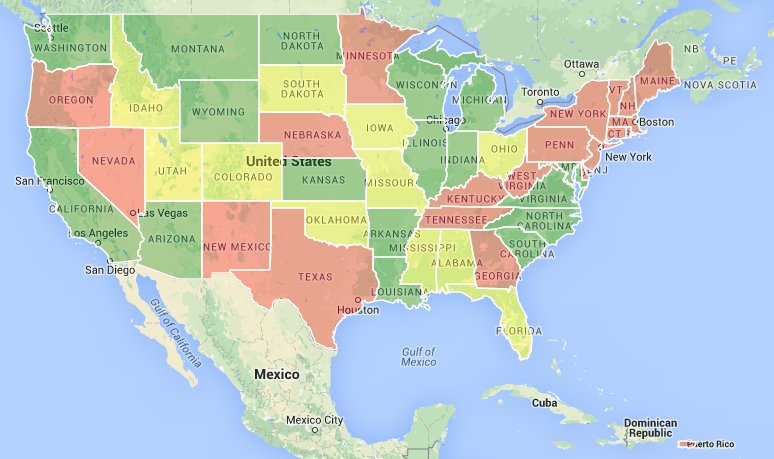
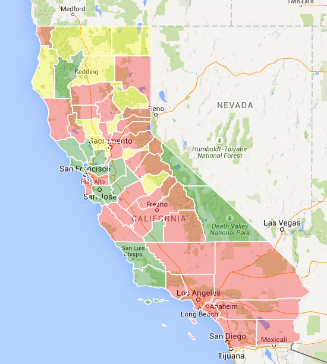
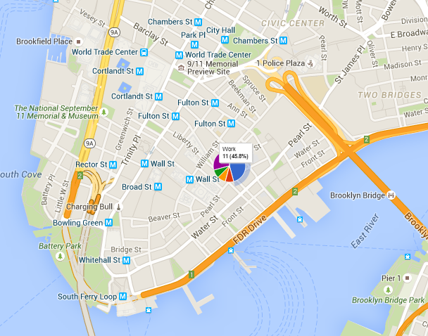
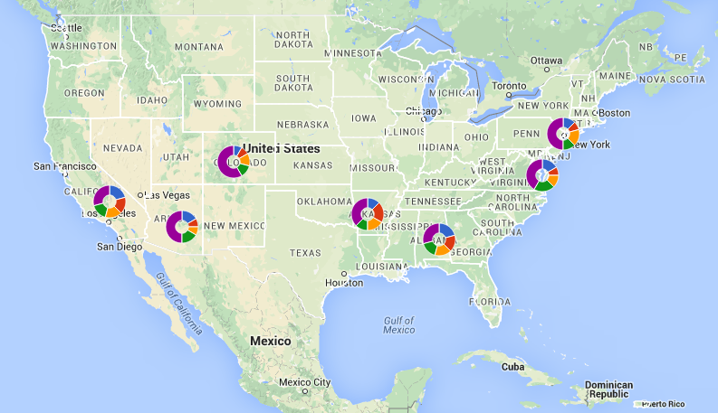
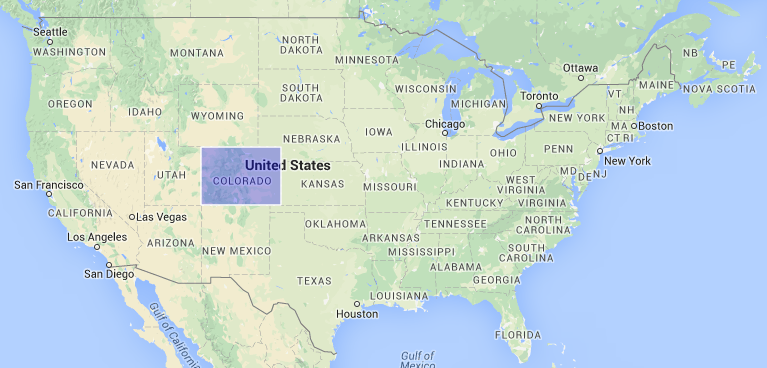

The current result of investigation using Google JavaScript Map API is a several examples that can demonstrate some possibility of map visualization.
The Google Maps provides Data layer to display custom data and maps. The Data layer is a container for arbitrary geospatial data that uses GeoJSON format. The GeoJSON can be used to render data as markers, polylines and polygons on a Google map.
The first example of map visualization the map of US where GeoJSON are used to render bounds of states and fill them using different colors.

The second one is a zoom for the some states of US. If you open link with first example and double click on the following states: Alaska, Alabama, Arkansas, Arizona, California, Colorado, Connecticut, District of Columbia, Delaware, Florida, Georgia, Hawaii, Iowa, Idaho, Illinois you can see details of state. To return back refresh page.

The Google map API provides Google Overlays to add on the map different objects. Overlays are objects on the map that are tied to latitude/longitude coordinates, so they move when you drag or zoom the map. We can add predefined objects like markers, info window, lines, areas, circles and rectangles, images. Also we can add custom objects by implementing the OverlayView interface.
The next example is adding google pie chart to map.

Using Overlays we can add any google chart to map. For example donuts charts for US.

We can use anpo MapServer as source of GeoJSON data to render polygons on the Google Map. For that we need to add converting radians data to latitude/longitude coordinates and setup header of server response using Cross-Origin Resource Sharing standard. The map server returns about 15000+ points for bounds of state. It's too much to render polygon on the map. It would be reasonable to optimize data array to reduce server traffic.
The Colorado was rendered using data from map server. Add server's data is very simple. We invoke method loadGeoJson from Google API like:
map.data.loadGeoJson("http://169.254.54.220:8080/geojson/us/state/CO")
